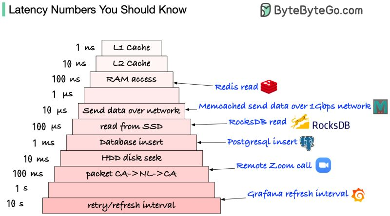
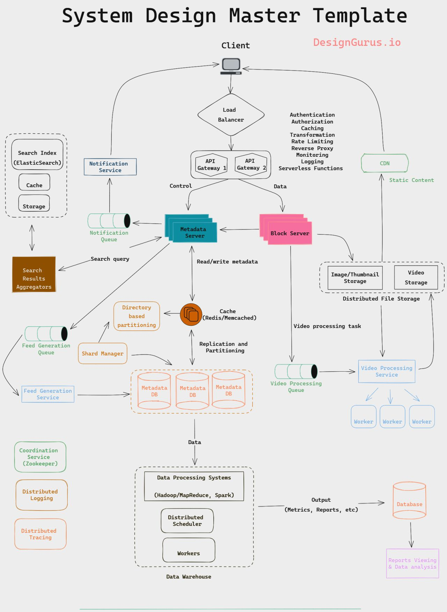

System Design Basics
A short orientation to the core building blocks of scalable systems and how the upcoming chapters fit together.
In this lesson
The three questions behind every design
Whenever we set out to design a large system, the work reduces to three recurring questions. They are simple to state and surprisingly hard to answer well, and the rest of this course exists to give you a vocabulary and a set of reusable answers for each.
- What pieces are available? What is the menu of building blocks — load balancers, caches, databases, queues, proxies, indexes — that we can assemble into a system?
- How do these pieces interact? How does a request flow from a client through the edge, into the application tier, across the data tier, and back? Where does state live, and who talks to whom?
- What are the right trade-offs? Every block buys you something (throughput, latency, availability) at a cost (complexity, consistency, money). Choosing well — and being able to defend the choice — is the entire game.
Scale only when you need to — but plan for it
Investing heavily in scaling infrastructure before you actually need it is not smart engineering, and it is not smart business. Premature scaling burns money, multiplies operational surface area, and slows you down with complexity you are not yet using. Many products would be better served by a boring, well-understood setup on a single beefy machine for far longer than engineers like to admit.
That said, a little forethought goes a long way. Knowing where the system will bend as load grows — which component becomes the bottleneck first, which piece of state is hardest to shard, which call sits on the critical path — lets you avoid decisions that are cheap to make today and brutally expensive to undo later. The goal is not to build for a billion users on day one; it is to avoid painting yourself into a corner.
The building blocks ahead
The next several chapters each take one fundamental building block and treat it in depth. Read in order, they form a toolkit: by the end you should be able to look at any of the classic and advanced design problems later in the course and reach for the right component on instinct, knowing both what it does and what it costs.
| Chapter | Building block | What problem it solves |
|---|---|---|
| 03 | Load balancing | Spreads traffic across many servers; removes single points of failure at the compute tier. |
| 04 | Caching | Keeps hot data close to where it is read to cut latency and offload the datastore. |
| 05 | Sharding / partitioning | Splits data across machines when one box can no longer hold or serve it. |
| 06 | Indexes | Makes reads fast at the cost of slower writes and extra storage. |
| 07 | Proxies | Intermediaries that aggregate, filter, transform, or shield requests. |
| 08 | Queues | Decouple producers from consumers and absorb bursts asynchronously. |
| 09 | Redundancy & replication | Keeps copies of data and components so failures do not mean downtime or loss. |
| 10 | SQL vs. NoSQL | Choosing the data model and consistency story that fit the access pattern. |
| 11 | CAP theorem | The fundamental limit on consistency vs. availability under network partitions. |
| 12 | Consistent hashing | Distributes keys across nodes so adding or removing a node moves minimal data. |
| 13 | Long-poll / WebSockets / SSE | Patterns for pushing data to clients in near real time. |
How this fits the bigger picture
These fundamentals are not an end in themselves — they are the foundation for the distributed-system design problems that dominate the second half of the course. When you later design a URL shortener, an Instagram, a Twitter, or an Uber backend, you will not invent new primitives; you will compose the blocks introduced here, justifying each choice against the requirements you clarified up front.
So the path through the course is deliberate: first the building blocks (chapters 03–13), then a step-by-step framework (chapter 14) for assembling them into a coherent design, then a long sequence of worked design problems that exercise the toolkit, and finally deeper distributed-systems theory and advanced designs for those targeting senior and principal levels.
Visual references

